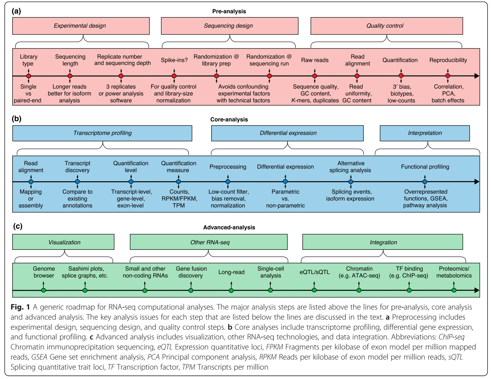
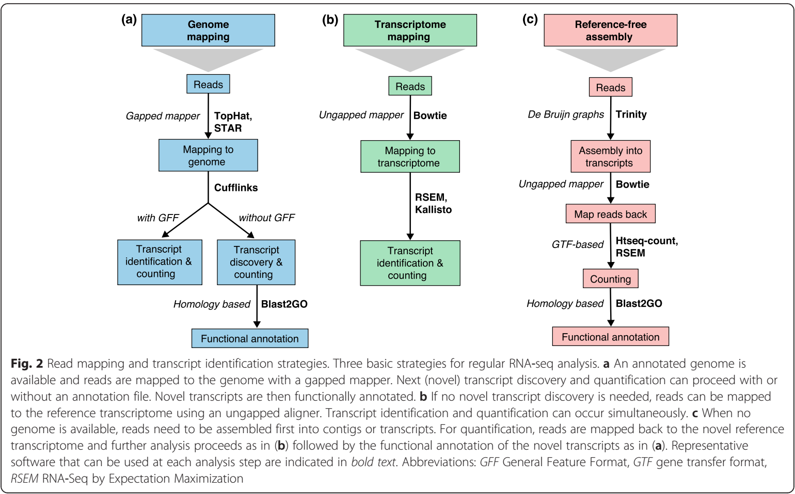

转录组基础知识¶
一篇RNA-seq分析流程的综述，全面而详细！深度好文，可用来反复阅读。初学者用于把握RNA-seq真个流程及各个流程选择上的差异。已经开始学习者可用来查缺补漏和发现新的分析角度。
A survey of best practices for RNA-seq data analysis
摘要：¶
没有任何一个RNA-seq分析流程可适用于所有的转录组分析。讨论RNA-seq分析流程主要步骤：实验设计，质控，比对，基因水平和转录组水平定量，可视化，基因差异表达，可变剪接，功能分析，融合基因检测，eQTL (expression quantification trait loci,表达数量性状位点)。展望转录组研究存在的问题。
背景：¶
研究材料基因组信息已知，通过将RNA-seq获得的序列比对到基因组上获得转录信息；研究材料无基因组信息则从头拼接reads为contigs后将reads比对到转录组。基因组注释已知，基于注释基因组进行转录组分析或发挖掘新的转录组及其调控通路。其次研究者可以对感兴趣的mRNA亚型表达或microRNA水平或等位变异分析。在此分析过程中可以只进行RNA-seq分析也可以联合其他组学一起分析。
不同的RNA-seq分析有不同的转录组定量，均一化以及差异表达分析，并且质控可确保结果的可重复性和可靠性。图一为Illumina sequencing实验设计、分析流程图。简单罗列一些数据及图例来说明这些分析中潜在的不足。最后讨论single cell RNA-seq（单细胞转录组）及测序长度比较（3代测序和2代测序）。
实验设计：¶
文库类型、测序深度、重复，准确的实验操作以确保数据未被污染。
首先：RNA提取中去除大量存在的rRNA， 通常占总RNA的90%，mRNA为1-2%。提取mRNA可选择用ployA选择性富集mRNA或删除rRNA。ployA通过RNA intergrity number （RIN，RNA完整度）来表示mRNA的比例，对于不能产生高质量和足够数量的材料则用删除rRNA法来获得mRNA（例如细菌mRNA无多聚A）。另一个问题是：是否产生strand-preserving libraries， strand-specific protocols 如dUTP法，通过在第二条cDNA合成时加入UTP，先于接头连接随后含有dUTP的链被降解。测序长度小于500bp，分单端测序（single end，SE）和双端测序（paired-end，PE）。读长较长的序列及双端序列更有利于注释信息较差的转录组分析。
其次：测序深度及文库大小。测序较深的到的转录组信息及转录本数量更加详细，但不是越深越好。5百万条比对序列对中岛高表达基因的量化分析足够，100万条序列足以分析低表达基因分析，单细胞转录组通常为1百万，高表达基因测序5万，脾组织只需2万。文库大小取决于目标转录组的复杂程度，测序深度有利于转录本的数量和鉴定，但同时增加了杂质信息和脱靶转录本。饱和曲线可以用来评估给定测序深度下转录组的覆盖度。
最后：样本重复，包括测序时不同批次的差异及样本的差异。至少3个重复
RNA-seq文库准备和测序过程中包扩：RNA大段，cDNA合成，接头，PCR扩增，bar-coding，lane loading，这些过程可能会增加测序结果的偏好性。外源参考转录组（exogenous reference transcripts，‘spike-ins’）可用来作为质控以及文库大小矫正。若测序量较大，降低技术误差：文库准备时不同批次及lane的样本完全随机，或每个样本单独进行barcoding，然后在多个illumina lane中，加入所有的样本进行测序。

RNA-seq数据分析¶
数据分析的主要步骤：指控，比对（有参考基因组及无参考基因组），获得基因及转录本表达矩阵，基因差异分析。也讨论可变剪接，转录本融合，小RNA表达，可视化工具。
1. 质控检测
1.1 原始序列
包括：序列质量，GC含量，接头，过高k-mers，重复reads。同一研究中重复度，k-mer或是GC含量应该已知，不一致性大于30%则剔除。常用FastQC。
准则：3‘末端序列质量下降时需要删除以增加比对率。FASTX-Toolkit 和Trimmomatic用来去除低质量序列，去接头，去掉低质量碱基。
1.2 比对
最重要的是比对到基因组或是转录组上的比对率。人类基因组的比对率期望值是70-90%，会出现多个序列比对在有限的序列区称之为“多重比对序列”（multi-mapping reads）；转录组上的比对率较低，由于未注释的转录本会被过滤且“多重比对序列”增加，由于同一个基因不同亚型共有外显子区。
另一个参数：序列覆盖度在外显子和比对链上的均一性。3‘末端转录本聚集表明序列质量差，GC含量可以显示PCR偏好性，指控工具包括：Picard，RSeQC，Qualimap。
1.3 量化
样本内转录本定量后需检测GC含量以及基因长度偏好性来居定是否进行矫正。确认无rRNA，smallRNA（R 包NOISeq或EDASeq 对计数进行质控）。
1.4 重复
整个RNA-seq数据的可重复性检测来排除批次效应（技术重复系数Spearman R2 > 0.9）。若相同条件下基因表达量有差异则主成分分析（principle component analysis，PCA）应聚在一支。

2. 转录本
有参分析时将序列比对到参考基因组或是转录组上获得表达转录本，比对到转录组上会屏蔽新的未注释的转录本，只对已知转录本进行定量分析。无参时先组装为长contigs后已contig作为表达转录组将reads比对上去进行定量分析，或者覆盖度可用于对转录本进行定量。区别在于转录和定量同时完成还是顺序完成。
2.1 比对
有参比对分两种：基因组比对和转录组比对（图2a，b），一条或多条序列（multireads）都可以比对在特定的位点。多比对由于重复序列或是有共同结构域的旁系同源基因而导致，在比对在基因组上会产生显著性的比对结果，在转录组为参考基因组时由于基因异构体含有共同的外显子而更显著，结果保留。在基因表达变化时转录本的发现和定量更加困难。
比对到参考序列¶
比对到参考基因组可发现新的转录本和基因，需要gap或剪接map由于序列可能跨越剪接区。要发现正确的剪接区尤其是参考基因组中存在错误或差异或者无保守区和融合转录本。Tophat分两步进行无剪接序列先比对到外显子，没比对的序列被分开比对来寻找外显子区。比对时参数设置取决于文库，错配数，reads的长度和类型及测序长度。
2.1 转录本发现
新转录本的发现困难在于：Illumina读长短，难跨越剪接区不能直接的到转录本全长；转录本的起始和终止位点难确定。PE reads和该覆盖率有利于低表达转录本的发现，重复有利于解决假阳性率（false-positive call）。Cufflinks, iReckon , SLIDE和StringTie与注释相结合将其加到可能的异构体中，Montebello将异构体的发现与定量用似然法比对，Augustus可讲转录组数据与编码蛋白转录本注释很好的结合，但非编码转录本较差。
2.2 从头合成转录本重建
无参序列组装为转录本，SOAPdenovoTrans， Oases，Trans-ABySS或Trinity。无参转录组需PE reads和读长较长的序列。无参分析在计算机分析时测序较深时要降低序列的数量。样本间比较分析时，建议将多个样本的所有序列都合并为一个输入文件来的到一个稳健的contigs（transcripts），然后比对回短序列进行表达量评估。
从头组装导致产生十或上百的contigs作为转录本片段，长测序技术如Bioscience 的SMRT提供读长可以为多数基因提供完整的转录本。
3. 转录本定量
RNA-seq分析核心为基因和转录本的定量分析，基于比对到转录本上的数量。最简单的定量方法是用HTSeq-count或featureCounts累积原始数量。基因水平定量使用GTF（genome transfer format ）文件，包含外显子和基因，通常丢弃很多序列。原始序列数量不能用于比较样本间的表达水平由于收到转录本厂素，总测序数以及测序偏好性的影响。RPKM是样本内均一化方法，用于去除长度和样本大小的影响（RPKM：reads per kilobases of exon model per millions reads）,FPKM(fragments per kilobase of exon model per million mapped read)与RPKs和TPM（transcripts per million）类似，都用于样本内归一化，FPKM可以与TPM相互转化。样本内和样本间的区分导致在文章中较为混乱。相同基因在样本之间的表达量比较时其长度不需要矫正，但同一个样本内对基因表达排序时时必须的由于较长的序列回累积更多的reads。样本之间Cufflinks得到基因长度显著不同不同忽略。
转录水平表达计算基于相同的转录本共有多数序列来进行计算。TopHat用最大期望值来对转录本的丰富度进行计算。Cufflinks使用GTF信息来发现转录本或只从比对序列提供从头合成的转录本。从转录本比对量化表达包括SEM (RNA-Seqby Expectation Maximization)，eXpress，Sailfish，kallisto。转录本中容许多比对reads以及将序列偏好性矫正后样本内均一化值输出。RSEM使用最大期望值并返回TPM值。NURD为SE reads提供转录组表达评估，占内存低。
4. 差异基因表达分析
差异表达分析需要将样本之间的基因表达值进行比较。RPKM，FPKM和TPM在样本间进行比较时将测序深度进行归一化，但当样本有杂合性转录本分布即高且差异表达特性偏离count分布时结果较差。NOISeq R包包含大量的分析plots对每种情况进行合适的归一化步骤。除样本内，样本间差异，批次效应可能会产生影响，COMBAT或ARSyN可以剔除批次效应。
RNA-seq定量分析基于reads counts绝对或可能匹配到转录本上（波松或负二项分布）。绝对-离散概率分布-小片段样本变异不同的表达包括在内时不适合。
edgeR将原始输入reads计数及可能的偏好性带入数据模型，将归一化和差异分析同时进行，类似的为DESeq2（负二项分布）。baySeq和EBSeq为贝叶斯法（负二项分布），不同实验组内的差异以及每组内每个基因的后验概率。无参法NOISeq或SAMseq做最小假设，从真实数据中为理论分析做空值分布估算。最小生物学重复为3。不同算法显著性的影响分析的结果，因此要表明参数设置，版本，以及考虑生物学重复。
5. 可变剪接分析
同一基因转录本异构体的表达为可变剪接。分析方法分两类：将异构体表达评估与差异表达检测结合来对总基因表达中每个异构体占比的变化进行计算，两步结合后第一步的不确定性考虑在内：数据分析来寻找差异异构体表达。
基于外显子分析法（exon-based）省略异构表达和可变剪接的信号检测通过比较两个比对样本之间基因外显子和连接区序列分布DEXseq和 DSGSeq （基因外显子count），rMATS（连接区reads），rDiff（可变区域基因readscounts），DiffSplice用比对图来发现可变剪接模型。优点：exon或junction法可精准的发现单个可变剪接；exon-based适合特殊的外显子和功能结构域，不适合整个异构体分析。
6. 可视化
可视化可以在reads水平（ReadXplorer)或在处理深度（read pileup）, 未均一化（总count） 或均一化后（基因组浏览器 UCSC browser，Integrative Genomics Viewer (IGV) , Genome Maps 或Savant，RNAseqViewer查看多个RNA-seq样本，展示风丰富的外显子，转录本，连接区，但比IGV慢。
7. 发现融合基因
染色体重排产生融合基因与新异构体基因鉴定方法类似，但跨度更大。假的融合基因由于多态性，同源异记序列错误而导致的比对错误而产生。过滤多态性丰富和同源配对基因，也过滤掉不可能参与基因融合的高表达基因如rRNA。另外野生型中在近融合区存在低频的二体可能以为着高表达基因的错配。
若得到正确的chimeric，下一步是得到有生物学功能的融合基因。当融合出现在对照数据中时可能会被过滤，当无对照数据时，大量不相关联的数据库同时出现，且过滤后出现真正的融合时则表明artifacts。
8. Small RNAs
sRNA通常包含18-34碱基，有miRNA, siRNA（小干扰RNA），PIWI-交互RNAs（PIWI-interacting RNA，piRNAs）以及其他类型的调控分子。由于其复杂度小测序通常为2-10 百万reads，于RNA-seq分析方法有不同。去接头动物中长度22和23bp，植物种21和24bp。sRNA需用Bowtie2，STAR，Burrows-Wheeler Aligner (BWA)比对到参考基因组上。未比对上的潜在的重复序列需要剔除。每个基因组上通常容许5-20个不同的mapping。保证无mRNA降解污染。
下一步的分析步骤包括与已知sRNA比较以及从头发现sRNAs。miRDeep用于动物分析，miRDeep-P用于植物，or the trans-acting siRNA预测工具 UEA sRNA Workbench。miRTools 2.0，ShortStack和 iMir能为sRNA文库综合注释，并鉴定多种 sRNAs分类
9. RNA-seq功能注释
标准转录组分析最后一步：差异表达基因（differentially expressed genes，DEGs）的功能和通路分析。两个主要的方法：比较差异表达基因与剩余基因组，基因富集分析（gene set enrichment analysis, GSEA）基于差异表达转录本排序。
功能分析需要对研究的材料有可用及丰富的功能注释。Gene Ontology，Bioconductor，DAVID或Babelomics包含多数模式物种的注释数据。从头组装所得到的新转录本缺乏注释信息，编码蛋白注释可以基于序列相似性用旁系同源功能注释（SwissProt），以及保守蛋白结构域用Pfam和InterPro。一般有50-80%的转录本可以被注释。缺少编码蛋白的转录本为长非编码RNA（long non-coding RNA）,相似性注释可用于短非编码RNA，而对于长非编码RNA还没有相应的注释。
与其他数据类型相结合¶
1. 与DNA测序结合
RNA与DNA测序相结合可用来发现单碱基多态性（single nucleotide polymorphism, SNP）RNA-编辑，表达数量性状位点（expression quantitative trait loci，eQTL）。经典的eQTL研究中，同一类型的组织基因型和转录组测序数量大于50，然后检测基因型和表达水平的关系，用来解释复杂性状基因偏好性。大量的eQTL研究表明基因变异影响多数基因的表达
RNA-seq在检测eQTL方面有两个优势：发现影响转录过程的变异；杂合性SNP可以分布比对到父本和母本上，对个体内等位基因特异性表达进行定量分析。
2. DNA甲基化
DEGs和甲基化模型的相关分析，然而通过线性相关性，贝叶斯相关性，逻辑相关性模型得出两者的相关性较低。网络互作分析RNA-seq与DNA甲基化之间的关系，发现一个或多个基因有差异表达和差异甲基化的协同性。
3. 染色质特征
RNA-seq与转录元件（transcription factor，TF）染色质免疫沉降测序（ChIP-seq）数据用来剔除ChIP-seq中的假阳性和表明目的基因上TF的激活或抑制。ChIP-seq数据组蛋白修饰用来表示表观修饰对基因表达量的改变。DNase-seq可用于DNA结合因子的基因组印记，与基因的表达相结合可用于研究转录网络活性。
4. MicroRNAs
两种数据相结合可能用来解释转录稳定水平miRNA的调控作用。
5. 蛋白组及代谢组
与蛋白组数据结合有争议由于两者的相关性低（～0.4）。然而仍可以用来发现新异构体。用RNA-seq预测未报道的肽键或事转录后编辑。与代谢组结合可用来发现基因表达和代谢水平的调控通路。
6.多数据类型联合及可视化
蛋白–蛋白, DNA–蛋白, miRNA–mRNA 互作网络来发现miRNA–基因调控模型。
展望¶
目前转录组分析主要方面：少量的供试材料和长序列中更好的发现转录本
1. 单细胞转录组（single-cell RNA-seq）
前沿和火热的研究区域。Smart-seq和Smart-seq2只需极少量的供试材料，可通过单个细胞的扩增得到。可用于发现组织中新的未分类的细胞类型。一类单细胞文库与细胞群相比，发现多细胞亚群与表达基因相结合。
少量的供试材料以及PCR扩增限制了测序深度，因而一般测序少于1百万reads。scRNA-seq测序深度增加可能有利于同源特异性表达基因的挖掘，但表达量的增加鲜有提高。
scRNA含有3000-8000个表达基因，加入参考转录本以及特异性分子标记（uniqe molecule identifiers，UMI）有利于克服偏好性扩增并提高基因定量。
scRNA-seq比对在转录组参考基因组上不能发现新的基因，若研究目的未基因表达量则用转录组未参考基因组来减少工作量。
2.长测序
短序列限制性在于不能精准的冲否完整的转录本。Pacific-Bioscience（PacBio）SMRT和Oxford Nanopore获得长序列。PacBio在cDNA分子上加接头形成一个环形结构，此单链用来多次测序。Nanopore GridION可直接用RNA合成酶和RNA特异性碱基进行测序。Moleculo技术准备文库时复合和限制DNA分子长度，将这些特定长度的链分开标记然后重新融合测序。PacBio最常见。
缺点：测序错误率高，不能用于从头合成需要参考基因组；SMRT细胞数量较低阻碍了转录本定量分析。
作者：dandanwu90
来源：https://www.jianshu.com/p/2055db183907
更新: 2021-02-10 11:42:59 原文: https://www.yuque.com/doublehelix/bioinfonotes/rawux9